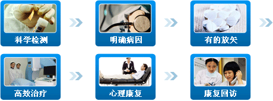

-
63.1%白领男性缺乏运动，仅两成人排尿情况正常
七成以上企业高管、老板出现不同程度性功能障碍
三成以上事业单位职员、公务人员长期处于精神紧张状态
58.9%车主患有不同程度的前列腺疾病
43.7%高校学生存在包皮过长情况
传统疗法与南宁中山泌尿医院技术优劣对比
南宁中山泌尿医院技术简介
打造一流男科是南宁中山医院（泌尿）立世准则。从人性化角度出发，为了给患者安全高效的治疗，该院积极引进国内外先进技术。六大主流科室，八大领衔技术，重拳出击，全力捍卫男性身心健康。

- 前列腺科
-
技术名称：“格塞特”腔道介入系统
治疗范围：前列腺炎 前列腺肥大 前列腺囊肿 前列腺痛
技术原理：将微创、激光、超导、光离子、电切镜等先进技术进行整合，加之国际上最新泌尿学理念，采取个性化、有针对性的治疗方式，对泌尿系统中的同种病变，采取因人而异，区别治疗。
- 生殖感染科
-
技术名称：GPH基因康复综合技术
治疗范围：尿道炎 睾丸炎 龟头炎 精囊炎 膀胱炎
技术原理：针对“病毒有极强极复杂生物基因链，因此生殖感染反复发作，不容易痊愈”的特点，从基因分子生物学角度，破坏病毒的基因生物链，达到彻底治愈的目的。
- 性传播疾病科
-
技术名称：PSD免疫平衡疗法
治疗范围：梅毒
技术原理：防止病毒感染 自身主动免疫，提取病毒，产生免疫性很强的特异性抗体，防其病毒再次感染。 杜绝病毒再生 干扰病毒的基因表达过程，破坏病毒的生物链，导致病毒无法复制，杜绝了病毒的再生。 杜绝病毒复发 中西医结合制定高强度药剂对病毒根源覆灭，能够快速杀灭病毒，根治梅毒、杜绝复发。
- 性功能障碍科
-
技术名称：“格赛特”爱能性功能治疗术 阴茎背部神经阻断术
治疗范围：阳痿、早泄
技术原理：针对性调节性神经、性腺轴和阴茎动脉血管上皮细胞功能，可增加血流量，激活海绵体动力，改善勃起硬度，恢复正常的射精阈值。对内分泌问题、生殖系统炎症、血管供血不足等引起的性功能障碍进行辨症施治、分类诊治。
- 生殖整形科
-
技术名称：“格赛特”光离子包皮环切术
治疗范围：包皮过长、包茎
技术原理：该技术微创、无痛、自然美观、不损伤性功能及无需重复治疗，当时立即引起医学界震动，整个过程只需15分钟，完全恢复只需7天左右，并随之取代以往韩式包皮、包茎整形术，成为新一代包茎、包皮过长治疗的“金标准”。
- 男性不育科
-
技术名称：中西医综合疗法
治疗范围：死精少精 射精功能障碍引起不育 性功能异常不育 内分泌异常不育
技术原理：通过神经介质调控、内分泌调控、中医中药调控对男性不育患者的生殖能力进行调节，科学数据发现不育根源、中西医结合双管齐下治疗男性不育，能快速的恢复男性正常生殖功能与生育功能。
-
何长民
名誉院长
博士生导师
南宁泌尿学科带头人问：我的生殖器出现了红肿发炎情况，请问该怎么办？
答：生殖器出现红肿发炎多为生殖感染疾病所致，建议来我院进行详细检查后区别治疗。来院治疗前，请勿滥用药物和洗剂，以免干扰医生判断。
-
南宁中山医院泌尿积极打造一流男科，为邕城百姓提供专业权威的健康保障，而先进的技术也给当地居民甚至外地人口安全无忧的解除了病痛折磨。
城 市 康复人数 南宁 8546 桂林 2141 河池 2364 柳州 1034 钦州 1786 其他 341